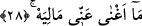
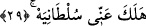

28. Malım bana hiç fayda sağlamadı;
“Malım” yâni dünyada bana âid olan mallarım ve taraftarlarım “bana hiçbir fayda
vermedi.” Yâni dünyadaki mal ve taraftarlarım âhiret azâbını benden savuşturmadı.
Âyette yer alan “mâ” bu anlama göre “nâfiye/olumsuzluk” mâ’sıdır. Cümlenin mef’ûlü
mahzûftur. “Mâliyeh” kelimesindeki “mâ” mevsuledir. “Lâm” ise harf-i cerr olup yâ-i
mütekellimin başına gelmiştir. Böylece bu ifâde kalıbı taraftarlar gibi herkese şâmil
olmuştur. Çünkü kelime, eğer yâ-i mütekellime muzâf bir isim olarak kabul edilecek
olursa o zaman taraftarlara şâmil olmaz, sâdece malı kapsar.
Keşşâf tefsirinin anlayışına göre “mâ ağna” ifâdesindeki “mâ” inkâr anlamı taşıyan
soru edâtıdır. Buna göre âyetin mânâsı; “Dünyada iken sâhip olduğum zenginlik şimdi
bana burada hangi faydayı sağlar ki? Ömrümü onun uğrunda fedâ edip tükettim”
demektir. Bir başka ifâdeyle; “Dünyadaki zenginliğim bana fayda vermedi, gördüğüm
azaptan hiçbir şeyi savuşturmadı” demektir.
Fakir (Bursevî) der ki: “Mâliyeh” kelimesi zâhire göre “mal” kelimesi olup ya-i
mütekellime muzaftır. Buna göre âyetin mânâsı; “Dünyada iken toplamış olduğum
mallarım buradaki azâbıma karşılık bana hiç fayda vermedi, tam tersine beni âhiretten
alakoydu. Bana fayda vermesi bir yana üstelik zarar verdi” demek olur. Böylece bu
mânâ, şu âyetlerdeki mânâ ile de uyumlu düşer: “Kazandıkları şeyler de Allah’ı
bırakıp edindikleri dostlar da onlara hiçbir fayda vermez.” (el-Câsiye, 45/10)
“Düştüğü zaman da malı kendisine hiç fayda vermez.” (el-Leyl, 92/11), “Malı ve
kazandıkları ona fayda vermedi.” (Tebbet, 111/2) Buna benzer daha bir çok âyeti
zikretmek mümkündür. Şu hâlde tefsir âlimlerinin ekserisinin burada umûmi bir mânâ
olduğu yolundaki kanâatleri, aynı zamanda Kur’an âyetlerinin beyân ettiği zâhirî
anlamlardan da bir dönüşü ifâde etmektedir.
29. Saltanatım da benden (koptu), yok olup gitti.
Râğıb İsfahânî’nin ifâdesine göre âyet-i kerîmede yer alan “sultan” kelimesi ile aynı
kökten olan “saltanat”, herhangi birşeyin üzerinde -o istemese de- zorla otorite imkânı
demektir. Nitekim bu anlayıştan hareketle sultana “sultan” ismi verilmiştir. Nitekim bu
kelime, “Bir kimse zulmen öldürülürse, onun velisine (hakkını alması için) yetki
(sultan) verdik” (el-İsra, 17/33) âyetinde de benzer mânâda kullanılmıştır. Kelimenin
kök yapısındaki “otorite” anlamından dolayı Arapçada “hüccet/delil” kelimesine sultan
denilmiştir. Delil kelimesine “sultan” denilmesi, delîl getirilen konuda kalplere yapılan
hücumdan ve orada bırakılan tesirden dolayıdır. Fakat delilin bu şekilde kalplere